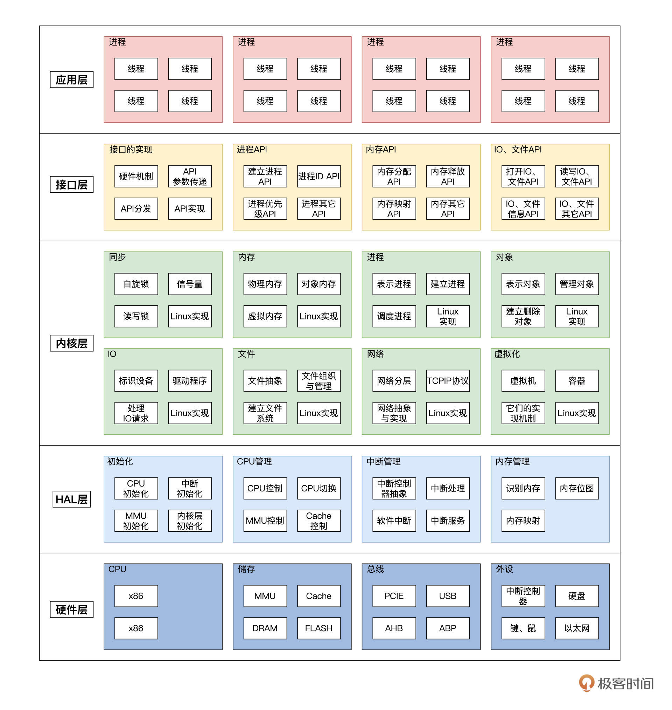

- 00 开篇词 为什么要学写一个操作系统？.md.html
- 00 编辑手记 升级认知，迭代自己的操作系统.md.html
- 01 程序的运行过程：从代码到机器运行.md.html
- 02 几行汇编几行C：实现一个最简单的内核.md.html
- 03 黑盒之中有什么：内核结构与设计.md.html
- 04 震撼的Linux全景图：业界成熟的内核架构长什么样？.md.html
- 05 CPU工作模式：执行程序的三种模式.md.html
- 06 虚幻与真实：程序中的地址如何转换？.md.html
- 07 Cache与内存：程序放在哪儿？.md.html
- 08 锁：并发操作中，解决数据同步的四种方法.md.html
- 09 瞧一瞧Linux：Linux的自旋锁和信号量如何实现？.md.html
- 10 设置工作模式与环境（上）：建立计算机.md.html
- 11 设置工作模式与环境（中）：建造二级引导器.md.html
- 12 设置工作模式与环境（下）：探查和收集信息.md.html
- 13 第一个C函数：如何实现板级初始化？.md.html
- 14 Linux初始化（上）：GRUB与vmlinuz的结构.md.html
- 15 Linux初始化（下）：从_start到第一个进程.md.html
- 16 划分土地（上）：如何划分与组织内存？.md.html
- 17 划分土地（中）：如何实现内存页面初始化？.md.html
- 18 划分土地（下）：如何实现内存页的分配与释放？.md.html
- 19 土地不能浪费：如何管理内存对象？.md.html
- 20 土地需求扩大与保障：如何表示虚拟内存？.md.html
- 21 土地需求扩大与保障：如何分配和释放虚拟内存？.md.html
- 22 瞧一瞧Linux：伙伴系统如何分配内存？.md.html
- 23 瞧一瞧Linux：SLAB如何分配内存？.md.html
- 24 活动的描述：到底什么是进程？.md.html
- 25 多个活动要安排（上）：多进程如何调度？.md.html
- 26 多个活动要安排（下）：如何实现进程的等待与唤醒机制？.md.html
- 27 瞧一瞧Linux：Linux如何实现进程与进程调度_.md.html
- 28 部门分类：如何表示设备类型与设备驱动？.md.html
- 29 部门建立：如何在内核中注册设备？.md.html
- 30 部门响应：设备如何处理内核I_O包？.md.html
- 31 瞧一瞧Linux：如何获取所有设备信息？.md.html
- 32 仓库结构：如何组织文件_.md.html
- 33 仓库划分：文件系统的格式化操作.md.html
- 34 仓库管理：如何实现文件的六大基本操作？.md.html
- 35 瞧一瞧Linux：虚拟文件系统如何管理文件？.md.html
- 36 从URL到网卡：如何全局观察网络数据流动？.md.html
- 37 从内核到应用：网络数据在内核中如何流转.md.html
- 38 从单排到团战：详解操作系统的宏观网络架构.md.html
- 39 瞧一瞧Linux：详解socket实现与网络编程接口.md.html
- 40 瞧一瞧Linux：详解socket的接口实现.md.html
- 41 服务接口：如何搭建沟通桥梁？.md.html
- 42 瞧一瞧Linux：如何实现系统API？.md.html
- 43 虚拟机内核：KVM是什么？.md.html
- 44 容器：如何理解容器的实现机制？.md.html
- 45 ARM新宠：苹果的M1芯片因何而快？.md.html
- 46 AArch64体系：ARM最新编程架构模型剖析.md.html
- LMOS来信：第二季课程带你“手撕”计算机基础.md.html
- 大咖助场 以无法为有法，以无限为有限.md.html
- 用户故事 yiyang：我的上机实验“爬坑指南”.md.html
- 用户故事 成为面向“知识库”的工程师.md.html
- 用户故事 技术人如何做选择，路才越走越宽？.md.html
- 用户故事 操作系统发烧友：看不懂？因为你没动手.md.html
- 用户故事 用好动态调试，助力课程学习.md.html
- 用户故事 艾同学：路虽远，行则将至.md.html
- 结束语 生活可以一地鸡毛，但操作系统却是心中的光.md.html
- 捐赠
大咖助场 以无法为有法，以无限为有限
你好，我是Yason Lee。
先简单介绍一下我自己，我曾为腾讯、土巴兔、中兴等多家公司服务过，目前在国内某电商公司担任研发方面的工作。我跟LMOS相识多年，也是 Cosmos Psi 开源项目的贡献者之一。
受到极客时间和老彭（LMOS）邀请，这次加餐我想从我的视角给你说说，Cosmos项目的来龙去脉，然后再结合我对老彭和其他很多优秀工程师的思考，跟你分享这样几个话题：个人技术成长历程上的一些学习技巧，以及怎样在复杂多变的当下基于知识迁移能力高效地解决问题。
Cosmos Psi项目诞生缘起
记得去年的某个周末，我和老彭、还有几位好友在聊天的时候，突然有些感叹：现在互联网为我们带来了海量知识的同时，似乎在某些方面也限制了我们的视野。
现实的情况常常让我欢喜让我忧。一方面，各种推荐系统为我们推荐的信息越来越精准，但这让我们更容易沉浸于一些局部的细节，而忽略了全局视野。另一方面，脚踏实地、从点滴积累又是必要的，很多时候我们想在计算机领域有所造诣，又离不开从微观入手，逐渐打通宏观的架构能力。
所以，我们为在刚入行的同学感到欣慰的同时，又隐约有些担忧，再联想到我们当初在技术成长的过程中，也因开放的互联网受益颇多。因此，我们几个觉得有必要去做些什么了。
于是通过头脑风暴，我们构思出了Cosmos Psi项目。但很快我们意识到，只有开源项目是远远不够，项目的源码只能算授之以鱼。如果我们希望项目能够生生不息地帮到更多朋友，那我们很有必要和一个靠谱的平台合作，这又成了我们和极客时间合作出品《操作系统实战45讲》的缘起。

当时我们就这个项目讨论了很多，这里我把印象最深刻的对话给你还原一下。当时我问老彭，如果想用一句话浓缩概括操作系统的话，你觉得应该是什么？
老彭说，操作系统是一套多元化的资源管理哲学观，通过工程、技术细节呈现的外现。这是我们在课程发起前的一次交流，我惊讶于老彭对知识高度抽象而又不失准确的总结能力。于是我又追问，一套优秀的哲学体系，浓缩出来可能是一个点，而展开后可能会包含海量细节，那么我们如何能够让不同知识储备的朋友，都能有所得呢？
当时老彭叹了口气，说：“哎，一个立体互相交错关联的复杂知识网络，一个零基础的朋友要想立刻弄清楚，这谈何容易。学习起来真的没有捷径，我们只能尽可能提炼、抽象出核心部分，帮助朋友们尽量少走弯路。可能也就勉强算是一种捷径了吧。”
接着，我又产生了一个疑惑，你觉得我们做这个事情能帮助多少人，目前市面上成熟的开源OS还是蛮多的，我们又能走多远呢？
听到这个问题，老彭说的是，能帮一个算一个，能脚踏实地、走一步就算一步。更何况我们和那些开源的项目还是有很大不同的。老彭在讲这个话的时候，我从他身上感受到了一种宁静而又坚定的信念。这让我不禁联想到乔帮主那句话：
“The people who are crazy enough to think they can change the world are the ones who do.” （只有疯狂到认为自己可以改变世界的人，才能真正改变世界。）- — Steve Jobs
唯变所适
好了，说了Cosmos Psi项目缘起，相信你已经了解了我们的初衷，接下来，我想分享一下我的思考，在复杂多变当下，如何提升我们解决问题的能力。
在创建Cosmos Psi项目中，我们有幸结识到了几位技术出身的CTO和CEO，我们发现他们不但专业能力很牛，知识迁移能力也很强。即使面对更加复杂多变的商业、管理问题时，这些人也显得游刃有余。
那么这种能力是如何得来的呢？我们也见过一些学校中刚毕业的应届初入职场的同学，做事情的时候按部就班去实施，可最终结果未必达到了预期，这到底又是哪里出了问题？接下来，我分享一些我的看法，希望能为你带来一些启发。
是“懒人”创造了方法
作为工程师，我们应该以“偷懒”为傲，是“懒人”创造了方法。回顾我们学习各种技术的过程，都是循序渐进的。体验多了，就会慢慢有思考，慢慢形成可以让我们偷懒的高效方法，这个过程你可以按照点、线、面的路子来理解。
初学编程，我们可能会从某个语言的语法特性开始学起，尝试自己动手基于这些语法特性由浅入深的实现一些算法、数据结构或者小的feature。在这个过程中，我们会发现，很多时候一些代码是可以复用的。
于是，我们开始尝试基于学到的面向对象/函数式等方法，把很多具有相似点的代码做一些简单的抽象和封装。相信到了这个阶段，你一定会感觉到一些小小的成就感吧！毕竟我们可以少写一些重复的代码，留出更多时间来学习和思考了。
再进一步思考，我们不再满足于只解决相似点带来的效率提升。我们发现逻辑与逻辑之间、问题与问题之间，同样可以抽象出一些共性的，于是我们又领会到了很多解决问题的设计模式/模型。这时候，我们开始享受这样的快乐——用一套程序来解决一类逻辑线中的通用问题。掌握了这类更为高阶的工具之后，我们又可以空出更多时间来“偷懒”了，是不是很开心？
之后，随着我们写的程序、逻辑越来越多我们又会产生新的认识，比如说，对于不同种类的程序，实现起来是可以进行分层的。于是，我们开始根据经验和自己对系统的各个参与者和对应行为的预判，对系统又做出更高维度的封装、抽象、分层。
比方说你是一个OS架构师，可能会考虑把OS划分为内核态、用户态，并抽象出多个子系统；如果你是一名互联网行业的架构师，可能会把前端、后端进行分层分离拆解，甚至走向分布式的漫漫长路…
这时候你会慢慢发现，通过架构层面的合理分层、设计调整，很多原本在一个系统内互相牵连的逻辑线就能被理顺了。这时候你可以逐个击破每个层面的问题，于是你的系统能够解决的事情就更多了，这是不是更有成就感啦？

上面的工程师成长小故事，其实也正是我们很多工程师随着知识、经验、思考的积累，都会走过的一条路。
看得更远些：点、线、面之后是什么？
作为一个工程师，当我们拥有了能在架构层面通过点、线、面不同的技术工具来解决问题的能力之后。我们还要继续深入思考：在技术领域的成功经验，如何能够迁移到更多领域呢？
如果你提出了这样的疑问那就太好了，因为你的探索精神会把你的能力带到一个更高的层次。让我们透过技术细节，看看技术背后的核心思想是什么吧！
不知道当你学习操作系统内核发展历程的时候，有没有观察到，批处理OS、DOS时代的操作系统管理资源的模式，很像上古时期“无为而治”的管理哲学，那时候内核与进程人人平等，我们都假设大部分程序是“好人”。
所以配合好的时候，系统相安无事，但是总有一天，有个初学者无意间写了一个死循环，吃掉了所有的CPU资源。这时我们发现不但别的程序没有机会运行了，操作系统自己也做不了什么。
所以接下来，OS基于保护模式、虚拟内存等特性，设计了很多资源隔离和权限隔离的策略。这时候计算机进入了“事在四方，要在中央；圣人执要，四方来效”的法家思想所主导的中央集权管理时代。
然而，单机的资源增长总是有瓶颈的，随着互联网时代的到来，优秀的工程师们发现可以通过网络通信让多个节点分布式协同起来，这样可以让系统拥有更强的可靠性、可扩展性以及吞吐性能。
于是乎，随着互联网时代海量数据传输、计算、存储的需求的到来，技术又从单机“中央集权”演进到了充分尊重每个节点的能力，衍生出了BGP、Gossip、DHT、Paxos以及各种分布式协同的技术、协议。这标志着操作系统的技术发展在“中央集权”之后又朝着“去中心化、自由平等的民主协作”的方向进行了切换。
你看，前面的OS内核技术演进史，在我们剥离掉技术细节之后，你有没有感受到背后的核心思想，也和一些管理层面的思想有共通之处呢？
同理，我们不妨盘点一下我们学到的OS技术中的很多功能与行为。我们可以顺藤摸瓜，思考一下，这些行为又是基于什么能力、调度哪些资源、为解决什么问题、而产生的这些设计？
继续思考还会发现，这些设计背后会有一套更加通用的核心思想。很多同学其实思考到这一步就停止了，还蛮可惜的。让我们再进一步思考下，那些设计这些特性的架构师、专家当初是遇到了什么难题，又是基于什么样的信念和思考方法，才让他在这个场景上使用某个“核心思想”，解决这个复杂系统架构问题的呢？
这种思考极为可贵！思考这种问题会让你拥有更强的知识迁移能力，进而提升问题解决能力。
你有没有发现，前面所讲的思路是一种系统化、结构化、动态发展的模式，它更适合处理复杂多变的现实问题。如果把这种模式搞清楚了，不少初入职场的同学陷入的“应试思维”到底出了什么问题，就显而易见了。
我们在“面向考试”去学习的时候，通常是假设课本上的知识是一个全集，这时把全集拆解成多个子集，学一学背一背就完事儿了。然而这个不变的假设，放在现实生活中显然是不合适的。
因为现实世界小到一个材料中的电子、原子、芯片指令，大到一个产品、市场、国家。随着时间的推移无时无刻不在发生着变化。在不断变化之中，如果我们总是追逐着不变的、有限的事物，则有一定概率会被时代所淘汰。
从这种无时无刻的变化当中，我想分享一个你可能有点陌生的概念——VUCA。其实这并不是一个新名词，而是一个上世纪提出的军事术语，指的是volatility（易变性）、uncertainty（不确定性）、complexity（复杂性）、ambiguity（模糊性）的缩写。
后来VUCA被广泛用于各个行业来描述复杂多变的世界，我觉得这个术语用于描述我们今天的工作、生活依然不会过时。也许正因为在这个VUCA的时代，我们更加需要用科学的思想去应对未来，所以今年的诺贝尔物理学奖(2021 年)才会颁发给研究复杂系统变化的科学家吧！
说了这么多，我想强调的就是，面对复杂多变的现实问题，妄想以不变应万变并不可取。我的主张是唯变所适，只思考一些点、忽略了背后更重要的线、面、体，则会过度陷入细节带来更大的问题。
当然，这也不意味着细节不重要，恰恰相反，细节才是验证你思考正确性的具体指标，这就好比如果你觉得你思考清楚了一个算法的逻辑，可是当你用代码写出来的时候，却错误百出无法通过测试，那也不过是纸上谈兵罢了。
知行合一
刚才我们说了系统思维跟细节的辩证关系，我提到注意不要过度陷入细节。可是对于初入职场的同学来说，很大的一个困扰就是没有合适的“标尺”来明确自己是不是过度陷入细节，这时候怎么办呢？
我认为最好的对策就是不要空学理论，而是要实际验证，也就是“知行合一”。我们不妨一起认真反问自己这样三个问题：
1.如果让我们看三个月篮球比赛，并仔细记忆背诵篮球比赛相关的规则和知识，但就是从来不去篮球场真的实地训练一下，如此三个月之后，上场和国家队的篮球运动员打比赛，你觉得能赢么？
2.如果经过不断的学习和练习，你已经能够成为一个不错的前锋了，可只有你一个人很强，你能赢得球赛么？
3.我们还会发现，很多各行各业的高手们，在成长路上或多或少都会遇到别人的质疑、各种各样的阻碍因素。这时候，他们停止前行了么？
思考完这三个问题，估计聪明的你已经领会到我的意思了。第一个问题说的是不要空学理论，而是要用实践验证理论方法，方能不断精进；第二个问题说的是不要只顾自己单兵作战，而是要注意到团队合作的重要性；而第三个问题说的是一种钝感力，外界纷纷扰扰，你是否有勇气倾听自己内心的声音？
其实这三个问题都是如何知行合一这个问题的衍生，希望你我都可以学以致用、找到志同道合的同伴，保持开放状态的同时不迷失自己。这里我想引用乔布斯的话跟你共勉，这段话的核心意思就是我前面说的，跟随你自己的心。
“Your time is limited, so don’t waste it living someone else’s life. Don’t be trapped by dogma — which is living with the results of other people’s thinking. Don’t let the noise of others’ opinions drown out your own inner voice. And most important, have the courage to follow your heart and intuition. They somehow already know what you truly want to become. Everything else is secondary.”- — Steve Jobs
法自然：合作分享，逃离内卷
最后，我还想聊聊分享、合作的价值。我们不妨从这个话题来切入：在学校学习，跟在开放世界中打怪的最大区别是什么？
其实就是学校里大部分都是闭卷考试，鼓励个体零和博弈，我们总是为了一个向上有封顶的总分，互相竞争排名。虽然说有“物竞天择”这样的说法，但如果我们只是用这种竞争的态度生活，难免走向社会达尔文主义的方向，结局就是一起越来越卷。
而开放世界打怪就不同了，多半是开卷考试，鼓励个体之间相互合作。这里我想给你分享一个有趣的冷知识：生物进化史中，我们熟悉的植物细胞和动物细胞，它们的共同祖先是真核生物。而真核生物的起源，其实来自数十亿年前的一次合作。古核生物细胞与始祖光合原核生物合作共生之后，才进化出了真核生物。
你看，经过一次伟大的合作，不但没有出现零和博弈的竞争困局，反而让世界进化得更加丰富多彩。
类比当下，开放、去中心化的互联网，让我们有了更多的合作机会。像Linux、Apache等基金会下的一个又一个成功的开源项目可以让我们看到更多合作带来的可能性。
对于知识的分享和传递，思想之间相互碰撞形成的火花，也让我们看到了人性的更加光辉的一面。纵然当下我们可以感受到“内卷”带来的诸多不良体验，但我同时也愿意相信，也许“合作”会成为对抗“内卷”的一把钥匙。期待我们携手并肩，共同进步！
© 2019 - 2023 Liangliang Lee. Powered by gin and hexo-theme-book.